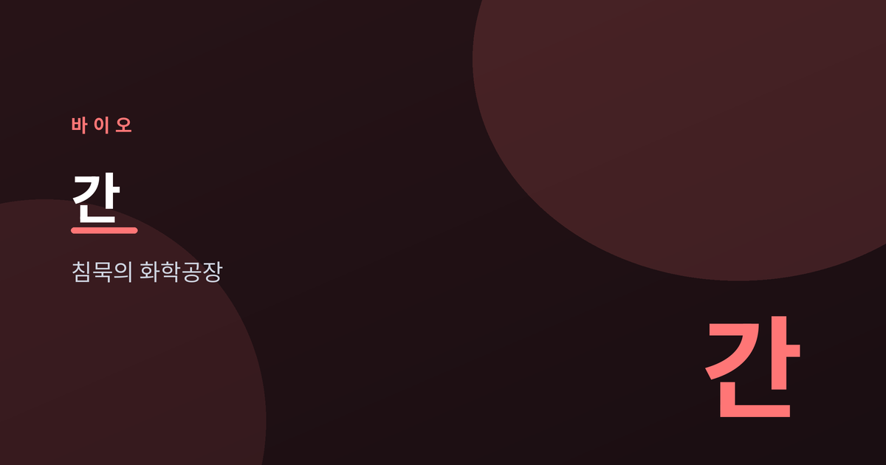
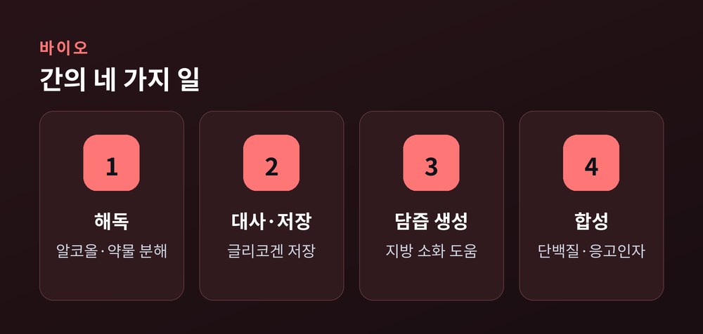
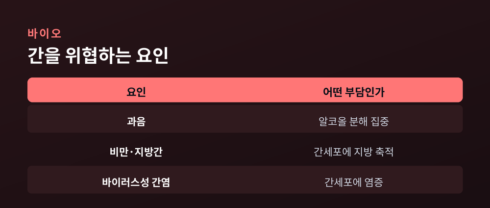
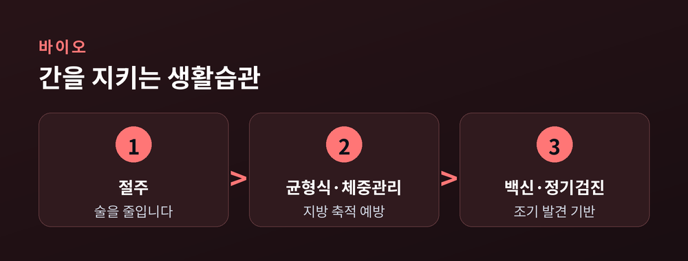
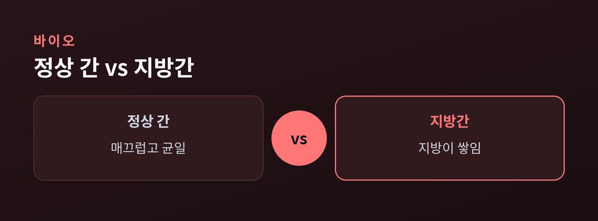

해독과 대사의 중심

우리 몸에는 조용히 일하는 장기가 있습니다.
바로 간입니다.
겉으로 티를 내지 않으면서, 하루도 쉬지 않고 화학 반응을 처리합니다.
간은 오른쪽 위 배, 갈비뼈 안쪽에 자리합니다.
성인 기준으로 체내에서 가장 큰 장기 중 하나입니다.
무게는 대략 1.2~1.5kg에 이릅니다.
크기만 큰 것이 아닙니다.
간은 수백 가지 화학 반응이 동시에 일어나는 공장에 가깝습니다.
심장이 펌프라면, 간은 정제소에 비유할 수 있습니다.
간의 역할은 하나로 요약하기 어렵습니다.
크게 네 가지로 나누어 보겠습니다.

첫째, 해독입니다.
알코올이나 약물, 노폐물을 분해해 몸 밖으로 내보낼 형태로 바꿉니다.
둘째, 영양소 대사와 저장입니다.
남는 포도당을 글리코겐으로 저장했다가 필요할 때 다시 내놓습니다.
셋째, 담즙 생성입니다.
담즙은 지방 소화를 돕는 액체입니다.
넷째, 단백질과 응고 인자 합성입니다.
피가 굳는 데 필요한 성분도 간에서 만들어집니다.
간은 이상이 생겨도 초기에 신호를 잘 보내지 않습니다.
통증을 느끼는 신경이 적기 때문입니다.
문제가 상당히 진행된 뒤에야 증상이 드러나는 경우가 많습니다.
그래서 '침묵의 장기'라 불립니다.
이 점이 간 건강에서 정기 확인을 강조하는 이유이기도 합니다.
간에 부담을 주는 대표적 요인은 정리해 볼 수 있습니다.

| 요인 | 어떤 부담인가 |
|---|---|
| 과음 | 알코올 분해가 간에 집중됨 |
| 비만·지방간 | 간세포에 지방이 쌓임 |
| 바이러스성 간염 | 간 세포에 염증이 생김 |
세 요인 모두 초기에는 자각하기 어렵습니다.
거창한 방법이 필요한 것은 아닙니다.
일상에서 실천할 수 있는 습관부터 살펴봅니다.

술은 줄이고, 몸무게는 관리하고, 검진은 챙깁니다.
먼저 절주입니다.
술을 줄이는 것만으로도 간의 부담이 가벼워집니다.
다음은 균형 잡힌 식사와 체중 관리입니다.
지나친 지방 축적을 막는 데 도움이 됩니다.
끝으로 백신과 정기 검진입니다.
간염 백신과 주기적 확인은 조기 발견의 기반이 됩니다.
지방간은 흔하지만 가볍게만 볼 대상은 아닙니다.
정상 간과 지방이 쌓인 간은 이렇게 다릅니다.

정상 간은 매끄럽고 균일한 상태를 유지합니다.
지방이 낀 간은 세포 사이에 지방이 쌓여 기능에 부담이 커집니다.
다만 개인의 상태는 저마다 다릅니다.
간 건강이 염려된다면 자가 판단보다 의료진과 상담하시길 권합니다.